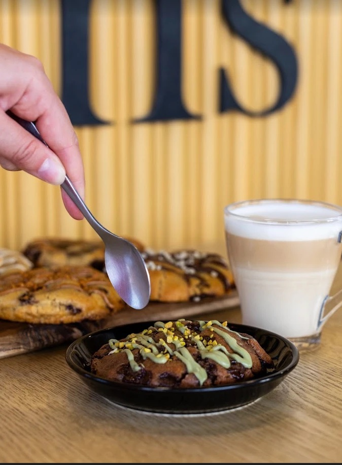
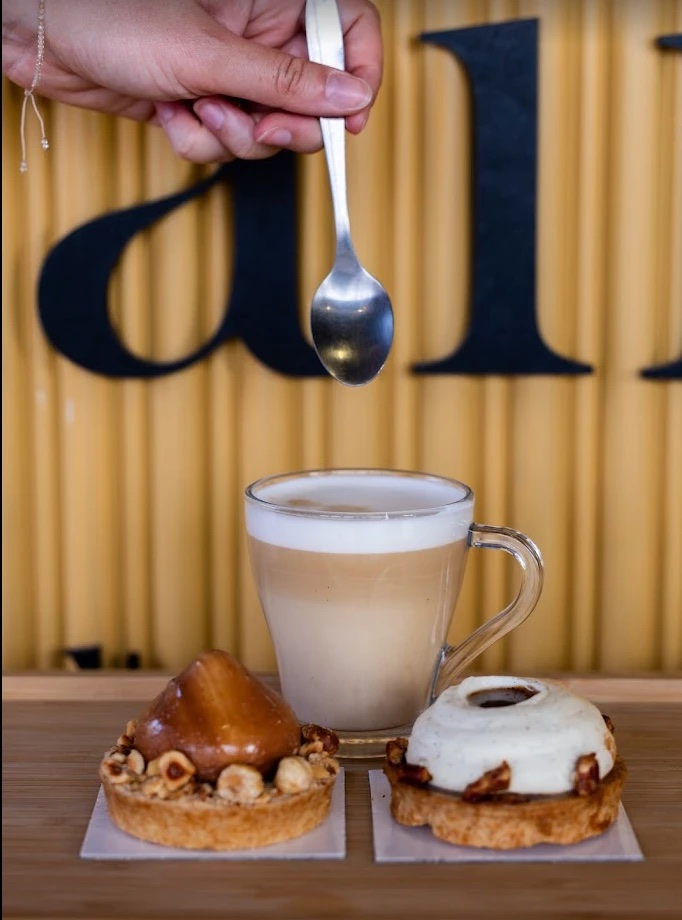
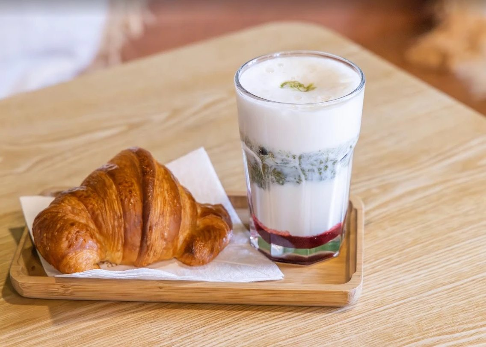

Boulangerie & café à Sainte-Marie-la-Mer
La maison où l'on prend le temps.
Nos pains, nos viennoiseries et les trompe-l'œil de Raphaël, un bar à boissons, une quarantaine de places et des jeux de société à emprunter. Installez-vous, on s'occupe du reste.
- 1 rue de la Liberté, 66470 Sainte-Marie-la-Mer
- Tous les jours 6h30 – 20h



Une vraie boulangerie artisanale, au cœur du village.
Au 1 rue de la Liberté, à Sainte-Marie-la-Mer (66470), Les Pains du Soleil ont ouvert leur quatrième maison le 16 octobre 2026, à la place d'une ancienne boulangerie. Et la date tombe bien : c'est le jour de l'anniversaire de Raphaël.
Sur 250 m², on retrouve tout ce qui a fait la réputation de la maison : les pains, les viennoiseries hautes en couleur, les pâtisseries et les fameux trompe-l'œil. Avec, en plus, ce qui fait de Sainte-Marie une adresse à part : une offre snacking, un bar dédié aux boissons et une salle où l'on a envie de rester.
À deux pas de l'avenue du Littoral, à quelques minutes de la plage de Sainte-Marie, de Canet-en-Roussillon et de Torreilles : la boulangerie du village, ouverte tous les jours.
« Il ne restait plus de boulangerie artisanale à Sainte-Marie. On voyait que ça manquait. »
Raphaël Bonneau
Un café de village, version soleil.
Sainte-Marie, c'est la maison où l'on s'attarde. On passe chercher sa baguette, et on finit par s'asseoir.
Le bar à boissons
Un bar rien que pour elles : cafés, lattes et boissons gourmandes, préparés à la minute.
Viennoiseries & trompe-l'œil
Les créations qui font parler de la maison, de la vitrine jusqu'à Instagram.
Le snacking
De quoi déjeuner sur le pouce, sur place ou à emporter.
Une partie avec votre café ?
Des jeux de société vous attendent : demandez-en un au comptoir, on vous le prête le temps de votre pause.
Une journée à Sainte-Marie.
- 6h30
Les portes s'ouvrent
Le pain du jour et les viennoiseries attendent les lève-tôt.
- Le matin
Petit-déjeuner
Un café au bar, un croissant, et la journée commence bien.
- Le midi
Le snacking
Sur place ou à emporter, pour la plage ou le bureau.
- L'après-midi
Goûter & jeux
Une pâtisserie, une boisson gourmande, une partie entre amis.
- 20h
À demain
Et on recommence le lendemain, sept jours sur sept.
Les premiers avis sont tombés.
« Une boulangerie au top ! Un accueil toujours chaleureux, une équipe souriante et agréable, et des produits aussi beaux que délicieux. Le pain est excellent, les viennoiseries sont un vrai régal et tout donne envie ! On sent la passion et le savoir-faire dans chaque produit. Un endroit convivial où l'on prend plaisir à revenir à chaque fois. Je recommande les yeux fermés, que ce soit pour le petit-déjeuner, le déjeuner ou une petite gourmandise ! »
Iona P. · Sainte-Marie-la-Mer · Avis Google
Vous êtes passé nous voir ?
Un avis aide énormément une maison qui vient d'ouvrir.
Laisser un avis Google →Venir nous voir.
Les Pains du Soleil · Sainte-Marie-la-Mer
66470 Sainte-Marie-la-Mer
Une envie, une question ?
Une commande pour un anniversaire, un goûter d'équipe, une question ? Appelez la boutique ou écrivez-nous, on vous répond depuis Sainte-Marie.